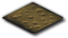
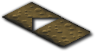

Tutorial
Page 2 of 6
How Isometric Games Work
In this section we will discuss the basics of how isometric games work before moving on to the GameMaker specific implementation in later
sections. Should the reader wish to learn about the underlying technology it is recommended that they visit the following URL
http://en.wikipedia.org/wiki/Isometric_graphics_in_video_games_and_pixel_art.
As mentioned previously, isometric games are psuedo-3D. They effectively represent 2D grids using a skewed perspective that gives an illusion
of depth. However, an isometric scene is drawn purely using 2D sprites that are created with the skewed perspective built in.
Here we can see a typical sprite used as part of an isometric grid:

For us to now fit too adjacent tiles of an isometric grid together using this sprite we would get the following:

As you can see from this image there is a section where the second tile overlaps the first one. When we come to render this scenario
in the game the overlapping portion from the second tile will disappear due to settings of the alpha channel in that portion of the sprite
meaning that the two sprites seamlessly fit together. In this instance the second sprite is placed halfway down and halfway across the initial
sprite but it is possible to layout the isometric grid using different proportions.
We can then continue with this paradigm of overlapping sprites to draw a full grid of isometric tiles that represent a 2D structure. In terms of how we translate
where a sprite should appear relative to the origin of the grid based on its location within the 2D grid structure we can refer the following table:
| x, y |
0
| 1
| 2
| 3
|
| 0 |
0.0, 0.0 |
0.5, 0.5 |
1.0, 1.0 |
1.5, 1.5 |
| 1 |
-0.5, 0.5 |
0.0, 1.0 |
0.5, 1.5 |
1.0, 2.0 |
| 2 |
-1.0, 1.0 |
-0.5, 1.5 |
0.0, 2.0 |
1.5, 2.5 |
| 3 |
-1.5, 1.5 |
-1.0, 2.0 |
-0.5, 2.5 |
0.0, 3.0 |
From this table we can then deduce that to translate the 2D (x,y) position in the grid to an isometric position for drawing we can use the following identities:
iso_x = (x - y) / 2
iso_y = (x + y) / 2
We can use these identities to translate a position in the drawn area of the grid back into a 2D grid position as follows:
2 * iso_x = x - y
(2 * iso_x) + y = x
2 * iso_y = x + y
(2 * iso_y) - y = x
(2 * iso_y) - y = (2 * iso_x) + y
(2 * iso_y) - (2 * iso_x) = 2y
y = iso_y - iso_x;
Similarly we can determine that the value of x is calculated as: x = iso_x + iso_y
Click on the Next button to go to the next page of the tutorial.